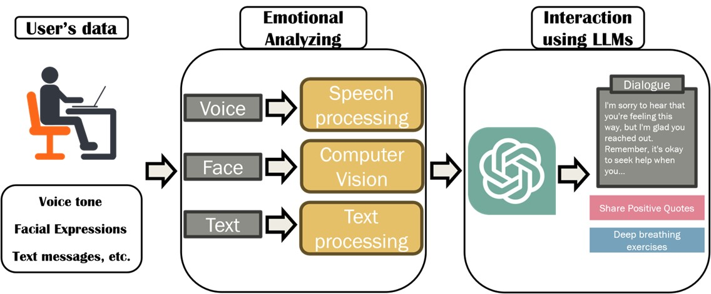
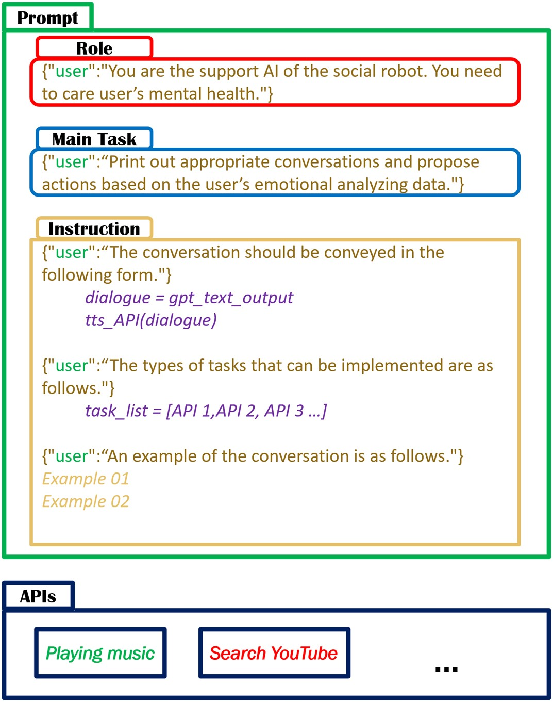

Introduction
In our quest to enhance human-machine interactions and address mental health concerns, we embark on the creation of a revolutionary social robot. This robot will harness the power of multi-modal emotional analysis and advanced Language Model Machines (LLMs) to provide users with personalized conversations and activities, with the ultimate goal of alleviating depression and promoting well-being.
As we delve into the intricacies of our project, it's important to note that the choice of modalities for data input may evolve over time based on project progress and user feedback.
Approaches
As previously explained in Approaches, the implementation of the system is largely divided into two parts. Charles Li will oversee the Emotional analyzing component, while Taehyeon Kim will be in charge of the Interaction using LLMs segment. This approach allows us to work on these two critical aspects in parallel, leading to efficient development and integration.
Our proposed social robot employs a multi-modal approach to analyze users' emotions, including voice tone, facial expressions, and text messages. It then generates output that is passed on to Language Model Machines (LLMs) to craft conversations and activity proposals tailored to the user's specific mental state. This process equips the social robot to detect and alleviate user depression.
 Figure 1: The Proposed Social Robot System Structure3.1 Emotional Analyzing
Emotional analysis can be categorized into two main approaches: classification and regression. Classification categorizes emotions into distinct classes, such as positive, negative, and neutral, while regression quantitatively maps emotions onto a two-dimensional coordinate system (Valence and Arousal) to capture nuances more precisely. These modalities may evolve as our project progresses.

In a scientific context, multi-modal emotion analysis offers clear advantages over single-modal approaches. Text, audio, and images each provide unique insights into emotional states, with audio focusing on tone and frequency, text employing transformer-based models for sentiment analysis, and image analysis relying on facial expression and posture recognition.
In summary, adopting multi-modal analysis is essential for a comprehensive understanding of emotions, with each modality (audio, text, and images) offering unique insights into emotional states.
3.2 Interaction Using LLMs
LLMs, like ChatGPT, can present challenges in specific systems due to the variability of their output. To obtain a stable and fixed form of output, prompt engineering is used. The prompt engineering structure consists of Role, Main Task, and Instruction, as shown in Figure 3. Role assigns a specific function to the LLMs, Main Task defines the primary objective, and Instruction contains other relevant information, including expected output examples.
 Figure 3: Prompt Engineering Structure for the Proposed Social Robot SystemThe ultimate goal of Interaction using LLMs is to have them generate conversations and activity proposals. Additionally, LLMs are trained to distinguish between these outputs. Conversations are exported in the form of voice messages through a Text-to-Speech (TTS) API, while action proposals are made immediately available to the user using the appropriate API based on the type of proposal.
Conclusion
In conclusion, our project represents a significant leap forward in the field of human-machine interaction, especially in the context of mental health support. By combining multi-modal emotional analysis with the capabilities of Language Model Machines, we aim to create a social robot that can genuinely comprehend and cater to the emotional needs of its users. With Charles Li and Taehyeon Kim at the helm of the implementation efforts, we are confident in the successful development and testing of our innovative system. This endeavor holds the promise of providing valuable assistance and companionship to individuals grappling with depression, fostering a brighter future for mental health support through technology.